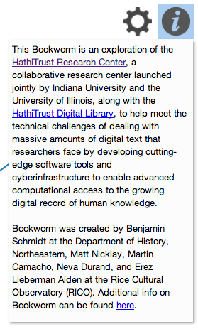
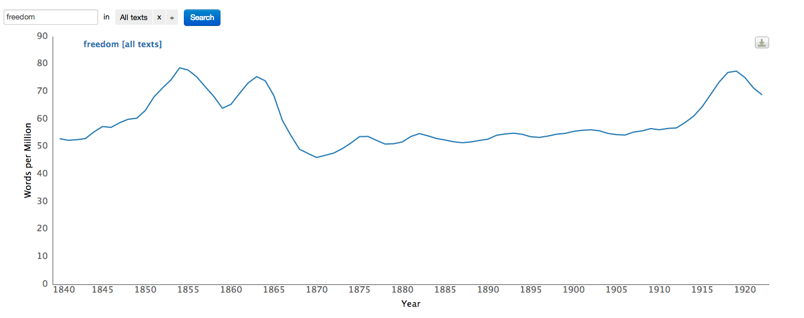

Help Guide to HathiTrust Research Center’s Bookworm (Alpha)
The search field and the facet field
Currently, Bookworm supports one-word (unigram) or two-word (bigram) entries as search terms, entered via the search box (search field). Logical connectors such as OR are not supported. Entering the words freedom rider in the search box will search for the contiguous phrase "freedom rider".
The facet field displays the options for faceted search. Initially, clicking "All texts" will pop up a menu that displays the possible facet fields. After a selection is made, you can modify it again by clicking on that label. Initially, by clicking "All" or inside this box, another popup displays a scrolling list of values that can be selected for the given facet. Multiple values for a given facet field can be chosen by clicking inside this box. So, for instance, you can search for "Publication Country:US OR Canada". In addition, you can select values for multiple facet fields. See the figure below, in which three facet fields have been specified.
The info button
Clicking on the “info” button, shown by an “i” icon at the top right corner of the window, will display information about the project, the HathiTrust Research Center and Rice Cultural Observatory. 
The settings button
Clicking on the settings button, shown by the "gear" icon which is next to the "i" icon, will pop up a menu for changing display options to specify "Time", "Quantity", "Case" and "Smoothing": 
Time range can be adjusted by dragging the "Time" slider for begin point and end point to the left and right as necessary.
- The "Quantity" selection allows you to choose how the numerical values are counted:
- "% of words" shows how frequently the unigram or bigram is used relative to all other tokens in the corpus, for the given year shown. This lets you see how often a word is used relative to the size of the corpus, without having to worry about things like whether there are more books in 1850 than 1900.
- The "% of texts" gives the number of texts that use your search terms at least once as a proportion of the total number of texts published that year. Unlike "% of words," it will not be skewed by a single book that uses a word hundreds of times; however, it may be impacted by changing sizes.
- When "word count" is selected, the actual count of the searched word is used for creating the plot.
- When "text count" is selected, only those volumes in which the searched word occurs, are used for creating the plot. So, each such text registers as only a single count. 
- Depending on what option you choose, the label of the y-axis of the graph is changed accordingly, and the chart values adjusted.
- For "Case", selecting the "Insensitive" button will ignore the distinction between lowercase and uppercase characters when counting words while selecting "Sensitive" will maintain the distinction between lowercase and uppercase.
"Smoothing" is a means to create a moving average over the data and to identify overall trends by removing jagged and discontinuous data points. To see the raw data points, set smoothing to 0. To average one point on each side of a data point, set smoothing to 1, which counts previous one, current one, and next one and divides that sum by 3. A smoothing setting of 5 means that 11 values will be averaged, 5 values on each side of the data point. The leftmost and rightmost data points will average fewer values. So with a smoothing of 1, only 2 data points will be averaged. Often trends become more apparent when data is viewed as a moving average. A smoothing of 1 means that the data shown for 1950 averages the raw count for 1950 plus 1 year on either side. Smoothing windows are weighted: the year shown is weighted the most heavily, and the weights decrease in each direction until the smoothing span is reached. A smoothing of 0 means no smoothing at all: just raw data. After setting "smoothing" to 5 years, the same graph looks more continuous and less jagged, as shown below:
The download button
Towards the right of the window, you will see a “Download” icon, which looks like this:
Clicking on the download button provides a popup menu with four options for downloading an image of the chart: “Download PNG image,” “Download JPEG image,” “Download PDF document,” and “Download SVG vector image”. These are just different formats in which you can save and download the plot that you have generated. A raster image consists of pixels, whereas a vector image is based on a mathematical model of the image. "Choose the “SVG vector image” option if you will need to scale/resize your image. The other options are raster image formats, which are less suitable for scaling, but have the advantage of a smaller file size.